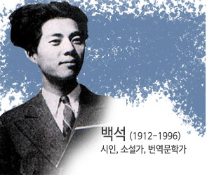

체험신청하러가기
한국 현대 문학관
소개

> 전시기간:2020.7.1~2021.7.31
> 전시장소:한국현대문학관 기획전시실
> 후원:㈜파라다이스
<하늘과 바람과 별과 시>1948
<사랑손님과 어머니>1954
<김약국의 딸>1963
5월, 솟아오르는 봄의 기운을 천지에서 느낄수 있는 이 즈음, 이봄의 아름다움을 시의 언어로 함께 감상해보는 건 어떨까요?
(02)2277-4857~8
토요일 관람이나 단체 관람을 원하시는 분은 사전에 꼭 전화로 예약해 주시기 바랍니다.
( 토요일은 예약자가 있는 경우 개관합니다. )
평 일 : 10:00 ~ 17:00
토요일 : 10:00 ~ 12:00